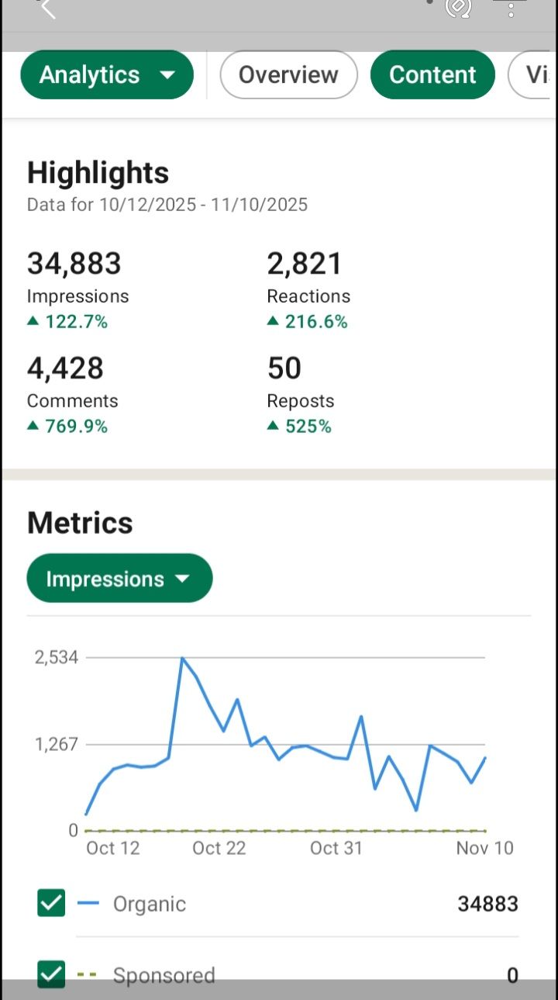
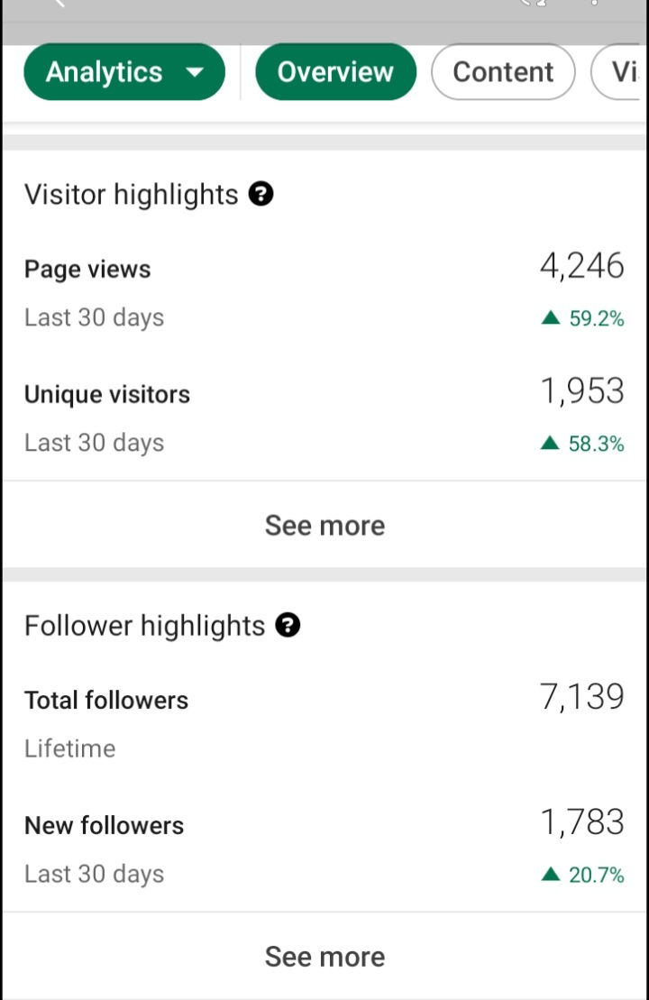
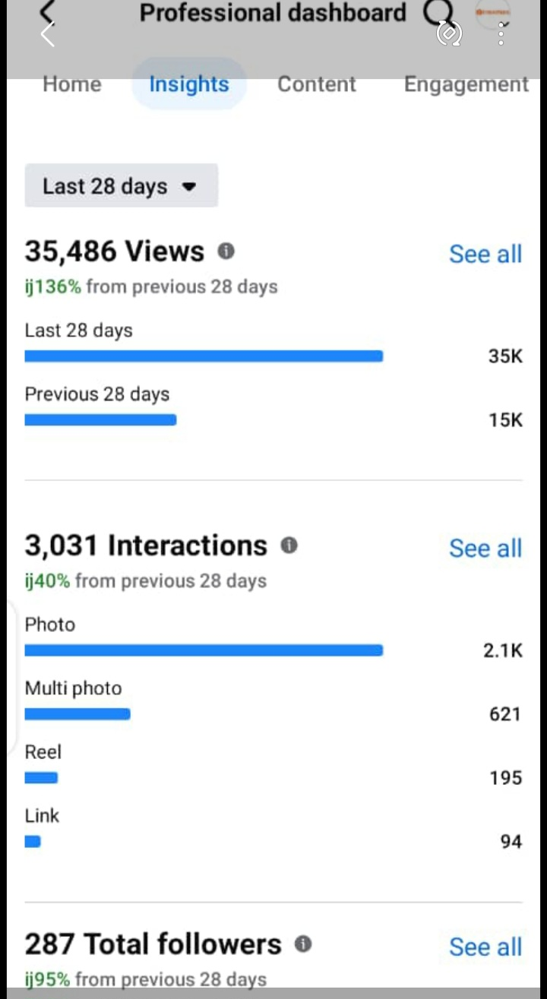
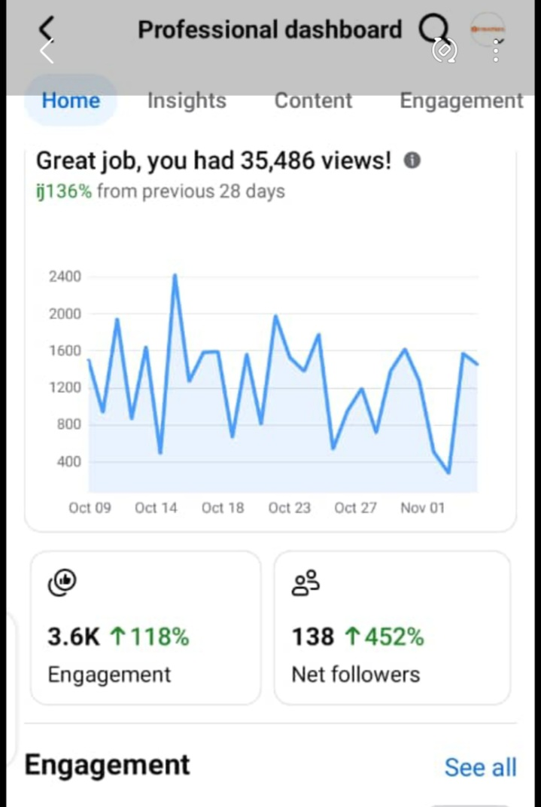
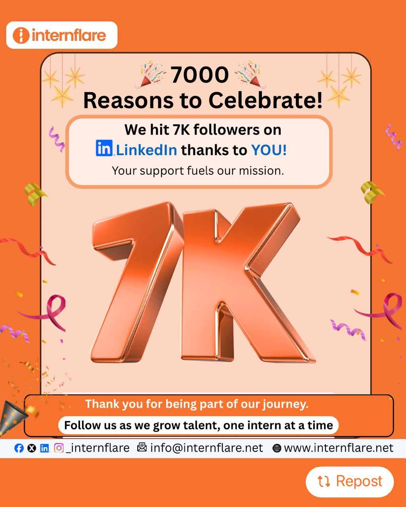
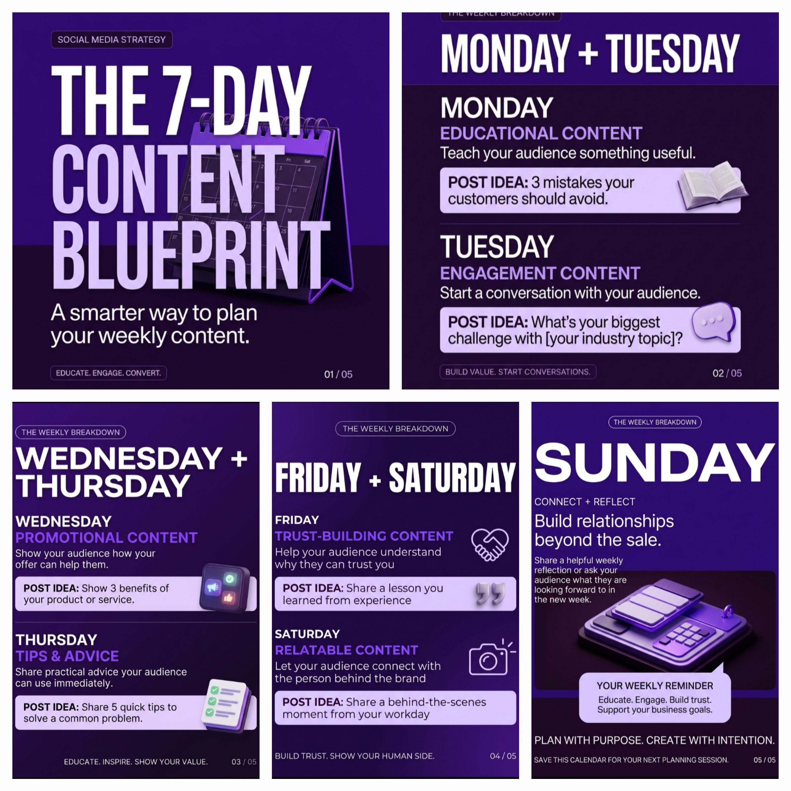
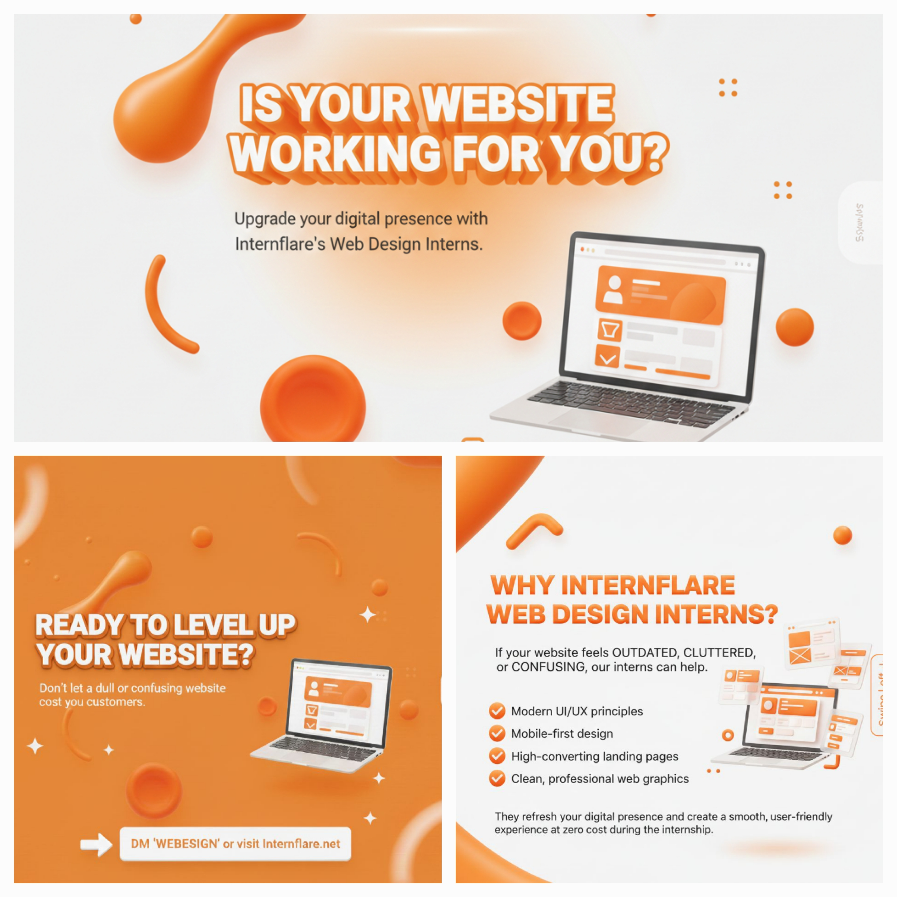
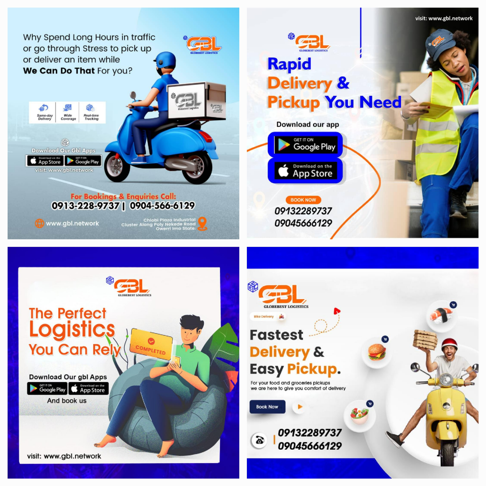
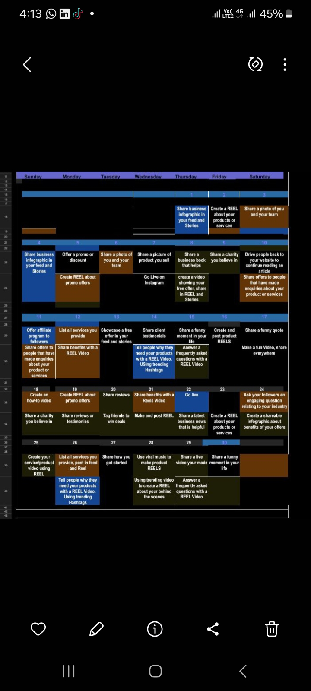

Social Media Management
Consistent platform management, content scheduling, page organisation, and day-to-day account support to help maintain a professional online presence.
Learn MoreI help businesses build a stronger online presence through thoughtful social media strategy, engaging content, creative visuals, and data-informed decisions.
Creative thinking. Strategic execution. Meaningful connections.
Thoughtful by design. Strategic by purpose.
Hello, I'm Bettie Claudie O. Amadi, a social media manager passionate about helping businesses communicate their value, connect with their audiences, and build a consistent digital presence.
With over three years of experience in social media management, I bring together content planning, creative design, audience engagement, and performance analysis to support a brand's online goals.
My approach combines creativity with purpose. Every post, visual, and content plan should contribute to a bigger picture: communicating clearly, building relationships, and helping businesses grow.
Practical, creative, and strategic social media support tailored to your business goals.
Consistent platform management, content scheduling, page organisation, and day-to-day account support to help maintain a professional online presence.
Learn MoreContent calendars, content pillars, campaign planning, and organised publishing schedules aligned with your brand's communication goals.
Learn MoreBrand-conscious social graphics and visual content designed to communicate messages clearly and maintain a consistent visual identity.
Learn MoreReviewing available social media performance data to identify useful insights, understand content performance, and inform future decisions.
Learn MoreSupporting meaningful audience interactions through comments, messages, relationship-building, and consistent brand communication.
Learn MoreDeveloping content ideas, captions, post concepts, and creative direction that help brands communicate their messages with clarity and consistency.
Learn MoreExplore selected examples of my social media analytics, creative graphics, and content planning work.

A review of social media performance data to understand content engagement and visibility.
Project 01
Social media metrics presented to support performance review and content decisions.
Project 02
An example of using platform analytics to examine social media activity and results.
Project 03
A selected analytics example demonstrating performance tracking and reporting.
Project 04
A visual content example created to communicate a brand message through design.
Project 05
A social media creative designed to support clear and consistent brand communication.
Project 06
A designed social media asset focused on visual communication and brand presentation.
Project 07A visual example of creative content developed for a social media audience.
Project 08
A graphic design example created to support a campaign or brand communication objective.
Project 09
A content planning example showing how social media posts can be organised into a publishing schedule.
Project 10Each project represents a part of my approach to thoughtful, creative, and organised social media work.
Good social media work starts with understanding the brand and building a clear plan.
Learn about the business, its audience, brand voice, and communication goals.
Organise content ideas, themes, schedules, and creative direction.
Develop relevant content and visuals that communicate the brand's message clearly.
Monitor available performance data and use useful insights to inform future content.
I bring together creative thinking, organisation, communication, and performance awareness to support effective social media management.
Tools and platforms relevant to social media management, content creation, and organisation.
My toolkit can adapt to the needs of each project and the tools available to the client.
Looking for thoughtful social media support, creative content, or a more organised digital presence? Let's talk about how we can work together.
Good ideas deserve thoughtful execution.